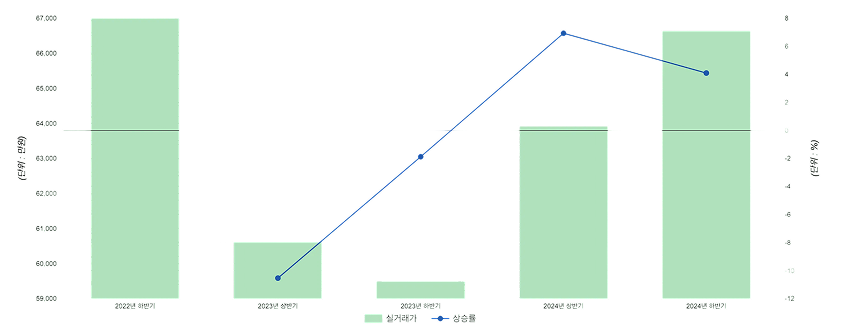

*본 데이터는 평균가 기준입니다. 따라서 거래 건수 및 개별 주택 거래 가격에 따라 편차가 발생할 수 있습니다.
| 지역(단지) | 2023년 하반기 | 2024년 상반기 | 2024년 하반기 | |||
|---|---|---|---|---|---|---|
| 실거래가 | 상승률 | 실거래가 | 상승률 | 실거래가 | 상승률 | |
| 지역(단지) 평균 | 2023년 하반기:실거래가67,000 | 2023년 하반기:상승률- | 2024년 상반기:실거래가60,612 | 2024년 상반기:상승률-10.54% | 2024년 하반기:실거래가59,493 | 2024년 하반기:상승률-1.88% |
| 지역(단지) 다림 | 2023년 하반기:실거래가67,000 | 2023년 하반기:상승률- | 2024년 상반기:실거래가60,612 | 2024년 상반기:상승률-10.54% | 2024년 하반기:실거래가59,493 | 2024년 하반기:상승률-1.88% |
| 지역(단지) 다림늘푸른 | 2023년 하반기:실거래가67,000 | 2023년 하반기:상승률- | 2024년 상반기:실거래가60,612 | 2024년 상반기:상승률-10.54% | 2024년 하반기:실거래가59,493 | 2024년 하반기:상승률-1.88% |
| 지역(단지) 대명쉐르빌 | 2023년 하반기:실거래가67,000 | 2023년 하반기:상승률- | 2024년 상반기:실거래가60,612 | 2024년 상반기:상승률-10.54% | 2024년 하반기:실거래가59,493 | 2024년 하반기:상승률-1.88% |
